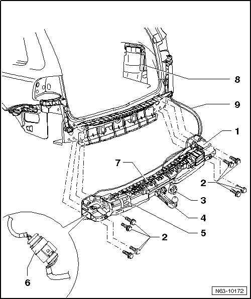

Electrically Swiveling Trailer Hitch
Rear Bumper
Electrically Swiveling Trailer Hitch
• The tightening specifications only apply to factory-installed trailer hitches.
• Obtain tightening specifications of other tow hitches from corresponding manufacturer.
• Information for the electrical system can be found under.
• The wiring harness can only be loosened at the socket and the connector in the carrier.
Removing
• The wiring harness - 9 - from control module - 8 - to carrier - 1 - should only be disconnected directly at the socket - 3 - and at the connector - 6 - on the carrier.
• When removing trailer hitch, be careful of wiring harness wires.

- Remove bumper cover.
- On each side, remove three of the bolts - 2 - present.
Further removal can only be done with a second technician due to the weight of the trailer hitch - 1 -.
- Remove remaining bolts - 2 -.
- Set down carrier and disconnect wiring harnesses - 9 - at connector - 6 - and at socket - 3 -. Detach wiring harness from carrier.
Installation
To install, perform the steps used for removal in reverse order.
Control module coding
Electrically swiveling trailer hitch is initialized using (VAS 5051) Vehicle Diagnosis, Testing and Information System.
- Select "Guided Fault Finding" on the vehicle diagnostic tester (VAS 5051).
- Using the "Go to" button, select "Function/Component selection" and the following menu items one after the other:
• Body (Repair Group 01; 27; 50 through 97)
• Body - Repair work (Repair Groups 01 and 50 to 77)
• 01 - On Board Diagnostic (OBD) capable systems
• Trailer detection
• Functions
• Output diagnostic test for the AHK, swiveling AHK